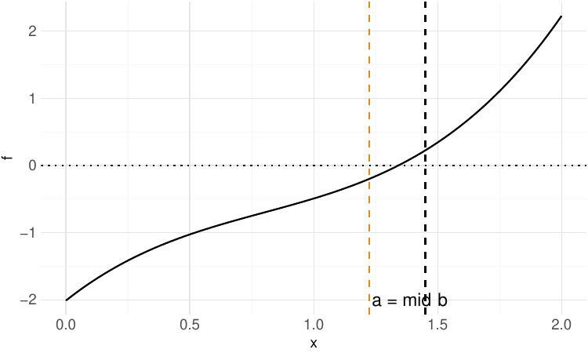
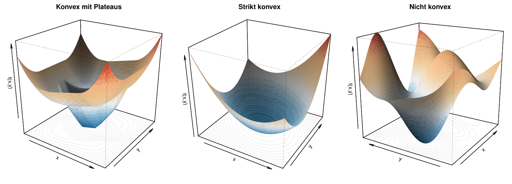
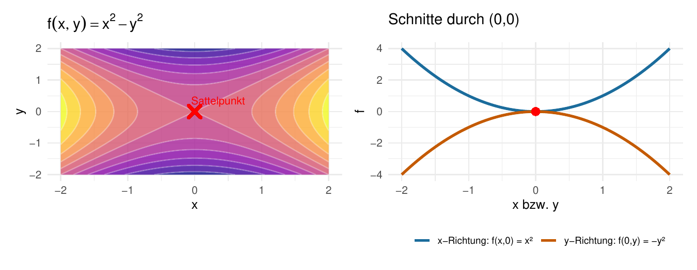
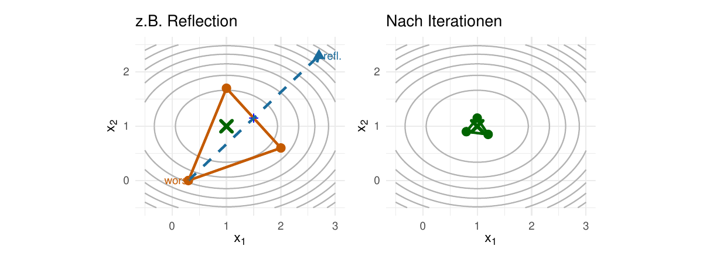
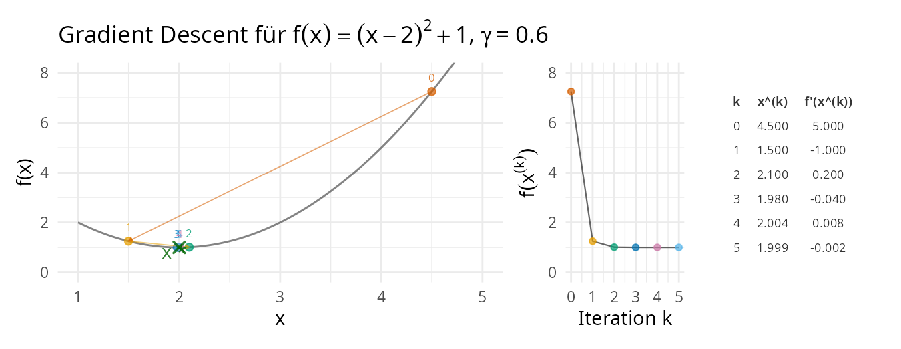
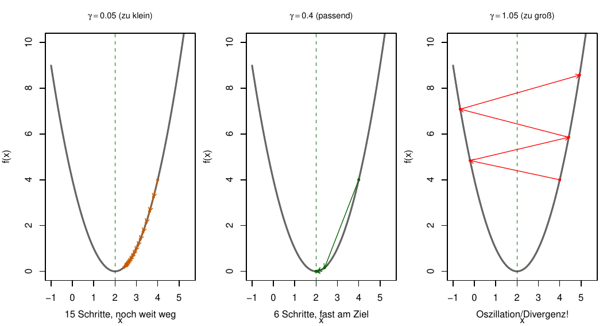
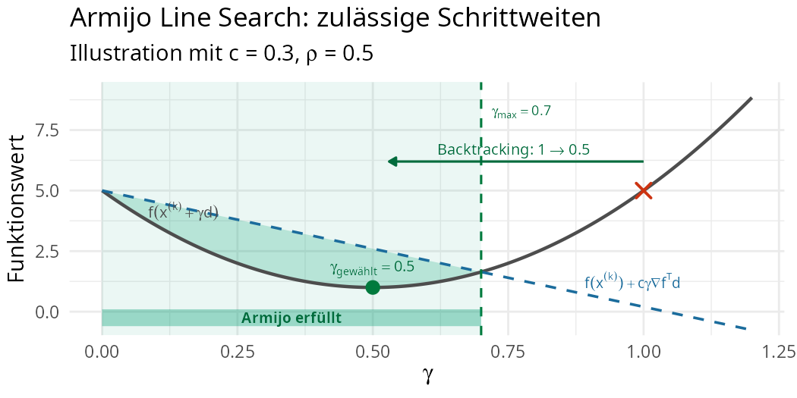

Optimierung I:
Grundlagen & Verfahren erster Ordnung
Fortgeschrittene mathematische Methoden in der Statistik
fabian.scheipl@lmu.de)Material: Thomas Nagler
LMU München
Opener-Quiz
\[ \definecolor{fmmgreen}{RGB}{0,158,115} \definecolor{fmmblue}{RGB}{0,114,178} \definecolor{fmmred}{RGB}{213,94,0} \definecolor{fmmorange}{RGB}{230,159,0} \definecolor{fmmpurple}{RGB}{158,87,213} \newcommand{\ind}{\unicode{x1D7D9}} \newcommand{\R}{{\mathbb{R}}} \newcommand{\N}{{\mathbb{N}}} \newcommand{\Q}{{\mathbb{Q}}} \newcommand{\C}{\mathbb{C}} \newcommand{\P}{\mathbb{P}} \newcommand{\Z}{{\mathbb{Z}}} \newcommand{\E}{{\mathbb{E}}} \newcommand{\K}{{\mathbb{K}}} \newcommand{\L}{\mathbb{L}} \newcommand{\F}{{\mathbb{F}}} \newcommand{\G}{\mathbb{G}} \newcommand{\S}{\mathbb{S}} \newcommand{\D}{{\mathbb{D}}} \newcommand{\bnull}{{\boldsymbol{0}}} \newcommand{\bzero}{{\boldsymbol{0}}} \newcommand{\ba}{{\boldsymbol{a}}} \newcommand{\bb}{{\boldsymbol{b}}} \newcommand{\bc}{{\boldsymbol{c}}} \newcommand{\bd}{{\boldsymbol{d}}} \newcommand{\be}{{\boldsymbol{e}}} \newcommand{\bg}{{\boldsymbol{g}}} \newcommand{\bh}{{\boldsymbol{h}}} \newcommand{\bi}{{\boldsymbol{i}}} \newcommand{\bj}{{\boldsymbol{j}}} \newcommand{\bk}{{\boldsymbol{k}}} \newcommand{\bl}{{\boldsymbol{l}}} \newcommand{\bn}{{\boldsymbol{n}}} \newcommand{\bo}{{\boldsymbol{o}}} \newcommand{\bp}{{\boldsymbol{p}}} \newcommand{\bq}{{\boldsymbol{q}}} \newcommand{\br}{{\boldsymbol{r}}} \newcommand{\bs}{{\boldsymbol{s}}} \newcommand{\bt}{{\boldsymbol{t}}} \newcommand{\bu}{{\boldsymbol{u}}} \newcommand{\bv}{{\boldsymbol{v}}} \newcommand{\bw}{{\boldsymbol{w}}} \newcommand{\bx}{{\boldsymbol{x}}} \newcommand{\by}{{\boldsymbol{y}}} \newcommand{\bz}{{\boldsymbol{z}}} \newcommand{\bA}{{\boldsymbol{A}}} \newcommand{\bB}{{\boldsymbol{B}}} \newcommand{\bC}{{\boldsymbol{C}}} \newcommand{\bD}{{\boldsymbol{D}}} \newcommand{\bE}{{\boldsymbol{E}}} \newcommand{\bF}{{\boldsymbol{F}}} \newcommand{\bG}{{\boldsymbol{G}}} \newcommand{\bH}{{\boldsymbol{H}}} \newcommand{\bI}{{\boldsymbol{I}}} \newcommand{\bJ}{{\boldsymbol{J}}} \newcommand{\bK}{{\boldsymbol{K}}} \newcommand{\bL}{{\boldsymbol{L}}} \newcommand{\bM}{{\boldsymbol{M}}} \newcommand{\bN}{{\boldsymbol{N}}} \newcommand{\bO}{{\boldsymbol{O}}} \newcommand{\bP}{{\boldsymbol{P}}} \newcommand{\bQ}{{\boldsymbol{Q}}} \newcommand{\bR}{{\boldsymbol{R}}} \newcommand{\bS}{{\boldsymbol{S}}} \newcommand{\bT}{{\boldsymbol{T}}} \newcommand{\bU}{{\boldsymbol{U}}} \newcommand{\bV}{{\boldsymbol{V}}} \newcommand{\bW}{{\boldsymbol{W}}} \newcommand{\bX}{{\boldsymbol{X}}} \newcommand{\bY}{{\boldsymbol{Y}}} \newcommand{\bZ}{{\boldsymbol{Z}}} \newcommand{\tagqed}{\tag*{$\blacksquare$}} \newcommand{\Acal}{{\mathcal{A}}} \newcommand{\Bcal}{{\mathcal{B}}} \newcommand{\Ccal}{{\mathcal{C}}} \newcommand{\Dcal}{{\mathcal{D}}} \newcommand{\Ecal}{{\mathcal{E}}} \newcommand{\Fcal}{{\mathcal{F}}} \newcommand{\Gcal}{{\mathcal{G}}} \newcommand{\Hcal}{{\mathcal{H}}} \newcommand{\Ical}{{\mathcal{I}}} \newcommand{\Jcal}{{\mathcal{J}}} \newcommand{\Kcal}{{\mathcal{K}}} \newcommand{\Lcal}{{\mathcal{L}}} \newcommand{\Mcal}{{\mathcal{M}}} \newcommand{\Ncal}{{\mathcal{N}}} \newcommand{\Ocal}{{\mathcal{O}}} \newcommand{\Pcal}{{\mathcal{P}}} \newcommand{\Qcal}{{\mathcal{Q}}} \newcommand{\Rcal}{{\mathcal{R}}} \newcommand{\Scal}{{\mathcal{S}}} \newcommand{\Tcal}{{\mathcal{T}}} \newcommand{\Ucal}{{\mathcal{U}}} \newcommand{\Vcal}{{\mathcal{V}}} \newcommand{\Wcal}{{\mathcal{W}}} \newcommand{\Xcal}{{\mathcal{X}}} \newcommand{\Ycal}{{\mathcal{Y}}} \newcommand{\Zcal}{{\mathcal{Z}}} \newcommand{\eps}{{\varepsilon}} \newcommand{\beps}{{\boldsymbol{\epsilon}}} \newcommand{\balpha}{{\boldsymbol{\alpha}}} \newcommand{\bbeta}{{\boldsymbol{\beta}}} \newcommand{\bchi}{{\boldsymbol{\chi}}} \newcommand{\bdelta}{{\boldsymbol{\delta}}} \newcommand{\bDelta}{{\boldsymbol{\Delta}}} \newcommand{\bepsilon}{{\boldsymbol{\epsilon}}} \newcommand{\bphi}{{\boldsymbol{\phi}}} \newcommand{\bgamma}{{\boldsymbol{\gamma}}} \newcommand{\betah}{{\boldsymbol{\eta}}} \newcommand{\btheta}{{\boldsymbol{\theta}}} \newcommand{\biota}{{\boldsymbol{\iota}}} \newcommand{\bkappa}{{\boldsymbol{\kappa}}} \newcommand{\blambda}{{\boldsymbol{\lambda}}} \newcommand{\bLambda}{{\boldsymbol{\Lambda}}} \newcommand{\bmu}{{\boldsymbol{\mu}}} \newcommand{\bnu}{{\boldsymbol{\nu}}} \newcommand{\bomikron}{{\boldsymbol{\omicron}}} \newcommand{\bpi}{{\boldsymbol{\pi}}} \newcommand{\bSigma}{{\boldsymbol{\Sigma}}} \newcommand{\bxi}{{\boldsymbol{\xi}}} \newcommand{\bzeta}{{\boldsymbol{\zeta}}} \newcommand{\bomega}{{\boldsymbol{\omega}}} \newcommand{\equivto}{{\Leftrightarrow}} \newcommand{\quequiv}{{\quad \equivto \quad}} \newcommand{\impl}{{\implies}} \newcommand{\quimpl}{{\quad \implies \quad}} \newcommand{\implby}{{\impliedby}} \newcommand{\notimplies}{\not\implies} \newcommand{\tr}{{\operatorname{tr}}} \newcommand{\spann}{{\operatorname{span}}} \newcommand{\col}{{\operatorname{col}}} \newcommand{\rang}{{\operatorname{rang}}} \newcommand{\diag}{{\operatorname{diag}}} \newcommand{\vec}{\operatorname{vec}} \newcommand{\pinv}{{^{+}}} \newcommand{\kron}{\mathbin{\otimes_{\mathrm{K}}}} \newcommand{\sign}{{\operatorname{sign}}} \newcommand{\la}{{\langle}} \newcommand{\ra}{{\rangle}} \newcommand{\inner}[1]{{\langle #1 \rangle}} \newcommand{\proj}{{\operatorname{proj}}} \newcommand{\bar}{\overline} \newcommand{\vol}{{\operatorname{vol}}} \newcommand{\dx}{{\, \mathrm{d}x}} \newcommand{\ol}{{\overline}} \newcommand{\argmax}{\mathop{\mathrm{arg\,max}}} \newcommand{\argmin}{\mathop{\mathrm{arg\,min}}} \newcommand{\conv}{\mathop{\mathrm{conv}}} \newcommand{\epi}{\mathop{\mathrm{epi}}} \newcommand{\interior}{\mathop{\mathrm{int}}} \newcommand{\Pr}{\mathbb{P}} \newcommand{\var}{{\mathbb{V}\mathrm{ar}}} \newcommand{\bias}{{\operatorname{bias}}} \newcommand{\abias}{{\mathrm{ABias}}} \newcommand{\AMSE}{{\mathrm{AMSE}}} \newcommand{\AMISE}{{\mathrm{AMISE}}} \newcommand{\cov}{{\mathbb{C}\mathrm{ov}}} \newcommand{\corr}{{\mathrm{Corr}}} \newcommand{\ov}{{\overline}} \newcommand{\wh}[1]{{\widehat{#1}}} \newcommand{\wt}[1]{{\widetilde{#1}}} \newcommand{\tod}{{\stackrel{d}{\to}}} \newcommand{\sumin}{{\sum_{i = 1}^n}} \newcommand{\sumjn}{{\sum_{j = 1}^n}} \newcommand{\KL}{{\operatorname{KL}}} \newcommand{\softmax}{{\operatorname{SoftMax}}} \newcommand{\layernorm}{{\operatorname{LayerNorm}}} \newcommand{\avg}{{\operatorname{avg}}} \newcommand{\relu}{{\operatorname{ReLu}}} \newcommand{\VC}{{\operatorname{VC}}} \newcommand{\indep}{{\perp \!\!\! \perp}} \newcommand{\unif}{{\operatorname{Unif}}} \newcommand{\bern}{{\operatorname{Bernoulli}}} \newcommand{\binomial}{{\operatorname{Binomial}}} \newcommand{\MSE}{{\operatorname{MSE}}} \newcommand{\iid}{\textit{iid}\;} \newcommand{\IF}{{\operatorname{IF} }} \newcommand{\BIC}{{\operatorname{BIC}}} \newcommand{\AIC}{{\operatorname{AIC}}} \newcommand{\IC}{{\operatorname{IC}}} \newcommand{\expl}[1]{{\tag*{[#1]}}} \newcommand{\cb}[1]{\textbf{#1}} \newcommand{\cbgreen}[1]{\textcolor{fmmgreen}{\textbf{#1}}} \newcommand{\cbred}[1]{\textcolor{fmmred}{\textbf{#1}}} \newcommand{\cbpurp}[1]{\textcolor{fmmpurple}{\textbf{#1}}} \newcommand{\cborange}[1]{\textcolor{fmmorange}{\textbf{#1}}} \newcommand{\corange}[1]{{\textcolor{fmmorange}{#1}}} \newcommand{\cblue}[1]{{\textcolor{fmmblue}{#1}}} \newcommand{\cgreen}[1]{{\textcolor{fmmgreen}{#1}}} \newcommand{\cred}[1]{{\textcolor{fmmred}{#1}}} \newcommand{\cpurp}[1]{{\textcolor{fmmpurple}{#1}}} \newcommand{\symbf}[1]{\boldsymbol{#1}} \]
Opener-Quiz
Beim Reinkommen: QR-Code scannen und die 2 Einstiegsfragen beantworten.
Frage 1: Sei \([a, b] \subset \R\) und \(f\colon [a, b] \to \R\). Wir wollen \(f(x) = 0\) lösen. Welche der folgenden Aussagen ist wahr?
- Falls \(f\) stetig ist, hat \(f(x) = 0\) genau eine Lösung.
- Falls \(f(a) < 0\) und \(f(b) > 0\), hat \(f(x) = 0\) mindestens eine Lösung.
- Falls \(f\) streng monoton ist, hat \(f(x) = 0\) höchstens eine Lösung.
Frage 2: Sei \(f\colon \R^n \to \R\) konvex und differenzierbar mit \(\nabla f(\bx^\star) = \bnull^\top\). Was folgt?
- \(\bx^\star\) ist ein lokales, aber nicht unbedingt globales Minimum.
- \(\bx^\star\) ist ein globales Minimum.
- \(\bx^\star\) kann auch ein Sattelpunkt sein.
Verwendete Vorkenntnisse
- Gradient \(\nabla f(\bx)\) für \(f: \R^n \to \R\); \(\nabla f(\bx)^\top\) ist die Richtung des steilsten Anstiegs
- Hesse-Matrix \(\bH_f(\bx)\) als Matrix zweiter Ableitungen: Krümmung
- Konvexität von Mengen und Funktionen
- Analysis:
- Notwendige Bedingung für Extrema: \(f'\left(x^\star\right) = 0\)
- Hinreichende Bedingung für Minima: \(f'\left(x^\star\right) = 0\) und \(f''\left(x^\star\right) > 0\)
- Zwischenwertsatz
- Lineare Algebra:
- positiv definite Matrizen
- Konditionszahl einer Matrix
Motivation & Einführung
Einführung
- Ein nichtlineares Gleichungssystem für \(f\colon \R^n \to \R^m\) hat die Form \[f(\bx) = \bnull\] \(\to\) Wie finden wir Lösungen \(\bx^\star\)?
- Ein unbeschränktes Optimierungsproblem für \(f\colon \R^n \to \R\) hat die Form \[\bx^\star = \arg\min_{\bx} f(\bx) \quad \text{bzw.} \quad \bx^\star = \arg\max_{\bx} f(\bx),\] \(\implies\) Falls \(f\) differenzierbar ist, muss \(\nabla f(\bx^\star) = \bnull^\top\) gelten.
- Ein beschränktes Optimierungsproblem stellt zusätzliche Bedingungen an Lösungen \(\bx^\star\): \[\bx^\star = \arg\min_{\bx \in S} f(\bx)\] mit Nebenbedingungen \(S \subset \R^n\), z.B:
- \(S = \{\bx \in \R^n \colon g_i(\bx) = 0, i = 1, \ldots, m\}\) (Gleichungsnebenbedingungen) und/oder
- \(S = \{\bx \in \R^n \colon h_j(\bx) \leq 0, j = 1, \ldots, p\}\) (Ungleichungsnebenbedingungen) \(\to\) Kapitel Optimierung II
- Alle diese Probleme werden meist iterativ gelöst.
Warum Optimierung?
Statistik und ML bestehen großteils aus Optimierungsproblemen:
Maximum-Likelihood-Schätzung für i.i.d. \(y_1, \dots, y_n\) mit Dichte \(f_Y(y \mid \btheta)\): \[\wh{\btheta}_{\text{ML}} = \arg\max_{\btheta} \left(\sum_{i=1}^n \log f_Y(y_i \mid \btheta)\right)\]
Supervised Learning mit Verlustfunktion \(L(y, \hat y)\) und Vorhersagen \(\hat y_i := p_\theta(\bx_i)\) aus Features \(\bx_i\):
\[\wh{\btheta} = \arg\min_{\btheta} \left(\sum_{i=1}^n L(y_i, p_\theta(\bx_i))\right)\] z.B. Lineare Regression: \(\wh{\bbeta} = \arg\min_{\bbeta} \|\by - \bX\bbeta\|_2^2\) oder Neuronale Netze.Regularisierte Regression (Ridge: \(p=2\), Lasso: \(p=1\)): \[\wh{\bbeta} = \arg\min_{\bbeta}\left( \|\by - \bX\bbeta\|^2_2 + \lambda \|\bbeta\|_p^p \right)\] kann als beschränktes Optimierungsproblem mit \(S = \left\{\bbeta:\, \|\bbeta\|_p^p \leq c(\lambda)\right\}\) formuliert werden: \[\arg\min_{\bbeta:\, \|\bbeta\|_p^p \leq c(\lambda)} \|\by - \bX\bbeta\|^2_2\]
Nichtlineare Gleichungssysteme
Lösbarkeit
Theorem
Sei \(f\colon [a, b] \to \R\) streng monoton, stetig und \(f(a) \cdot f(b) \le 0\).
Dann hat die Gleichung \(f(x) = 0\) eine eindeutige Lösung.
Beweis.
- Weil \(f\) streng monoton ist, kann es höchstens eine Lösung geben.
- Falls \(f(a) \cdot f(b) = 0\), ist \(f(a) = 0\) oder \(f(b) = 0\).
- \(f(a) \cdot f(b) < 0\) bedeutet, dass \(f(a)\) und \(f(b)\) verschiedenes Vorzeichen haben.
- Nehmen wir o.B.d.A. an, dass \(f(a) < 0 < f(b)\).
Weil \(f\) stetig ist, gibt es nach dem Zwischenwertsatz ein \(x \in (a, b)\), sodass \(f(x) = 0\). \(\blacksquare\)
Anmerkung:
Diese Bedingungen sind hinreichend, aber nicht notwendig für Lösbarkeit.
Bisektionsverfahren
Ziel:
Löse \(f(x) = 0\), \(f \colon \R \to \R\).
Bisektionsverfahren
- Inputs:
- Stetige Funktion \(f\)
- Zwei Punkte \(a, b\) mit \(f(a) \cdot f(b) < 0\) (also: unterschiedliche Vorzeichen)
- Ziel-Genauigkeit \(\epsilon\): \(|x^\star - x^{(k)}| < \epsilon\)

Kommentare:
- Kann auch verwendet werden, um die Umkehrfunktion \(f^{-1}(y)\) auszuwerten: Löse \(f(x) - y = 0\).
- Der Algorithmus benötigt \(\left\lceil\log_2\left(\frac{b - a}{\epsilon}\right)\right\rceil\) Schritte.
- Eignet sich nur für univariate Funktionen.
Newton-Raphson-Verfahren
Ziel:
Löse \(f(x) = 0\) für \(f \colon \R \to \R\) differenzierbar.
Idee:
Approximiere \(f\) lokal durch eine Tangente und finde deren Nullstelle.
Taylor-Entwicklung um \(x^{(k)}\): \[f(x) \approx f(x^{(k)}) + f'(x^{(k)})(x - x^{(k)}) \overset{!}{=} 0\]
Newton-Raphson-Iteration \[x^{(k+1)} = x^{(k)} - \frac{f(x^{(k)})}{f'(x^{(k)})}\]
Geometrisch:
Schnittpunkt der Tangente an \(f\) im Punkt \(x^{(k)}\) mit der \(x\)-Achse.
Newton-Raphson: Visualisierung

- Konvergenz: Quadratisch nahe einer einfachen Nullstelle (\(f'(x^\star) \neq 0\)): \(e_{k+1} \approx C \cdot e_k^2\) für \(e_k := \left|x^{(k)} - x^\star\right|\) mit \(C = \frac{\left|f''(x^\star)\right|}{2\left|f'(x^\star)\right|}\)
- Verbindung zur Optimierung:
Newton für \(\min f(\bx)\) ist Newton-Raphson für \(\nabla f(\bx) = \bnull^\top\)!
(\(\to\) Kapitel Optimierung II) - Für multivariate Probleme heute: Gradientenverfahren.
Das Optimierungsproblem
Das Optimierungsproblem
Ziel:
Finde das Minimum von \(f(\bx)\), \(f \colon \R^n \to \R\). \[\bx^\star = \arg\min_{\bx \in \R^n} f(\bx)\]
Wichtige Beobachtungen:
Maximierung ist äquivalent: \(\max f(\bx) = -\min(-f(\bx))\)
Ist \(f\) differenzierbar, muss am Minimum gelten: \[\nabla f(\bx^\star) = \bnull^\top\] \(\implies\) Optimierung \(\simeq\) Lösen von Gleichungssystemen!
Problem:
\(\nabla f(\bx) = \bnull^\top\) meist nicht analytisch lösbar
\(\implies\) iterative Verfahren nötig
Konvexe Funktionen in der Optimierung
- Konvexe Funktionen ergeben einfachere Optimierungsprobleme:
Proposition
Für jede differenzierbare, konvexe Funktion \(f\colon \R^n \to \R\) sind die folgenden Aussagen äquivalent:
- \(\bx^\star\) ist ein globales Minimum von \(f\).
- \(\nabla f(\bx^\star) = \bnull^\top\).
- Das bedeutet:
- Jeder kritische Punkt ist ein lokales Minimum.
- Jedes lokale Minimum ist ein globales Minimum.
Wenn wir ein konvexes Optimierungsproblem lösen, finden wir garantiert ein globales Optimum!
(Beweis → Anhang)
Strikt konvexe Funktionen
- Um die Eindeutigkeit von Minima zu garantieren, benötigen wir eine stärkere Form von Konvexität.
Def.: Strikte Konvexität
Sei \(\Xcal\) konvex. Eine Funktion \(f\colon \Xcal \to \R\) heißt strikt konvex, falls für alle \(\bx, \by \in \Xcal\) mit \(\bx \neq \by\) und alle \(\lambda \in (0, 1)\) gilt \[\begin{align*} f(\lambda \bx + (1 - \lambda) \by) < \lambda f(\bx) + (1 - \lambda) f(\by). \end{align*}\]
Proposition
Sei \(f\colon \R^n \to \R\) strikt konvex.
Dann hat \(f\) höchstens ein Minimum.
Wenn wir ein strikt konvexes Optimierungsproblem lösen, finden wir garantiert das eindeutige globale Optimum!
- Gilt auch mit konvexer zulässiger Menge;
Spezialfall Projektionstheorem: quadrierte Distanz \(\|\bx - \by\|^2\) ist strikt konvex in \(\by\).
Optimierungslandschaften

- Links: konvex mit Plateaus – Minimumsregion, flache Teilstücke
- Mitte: strikt konvex – “Schüssel” mit eindeutigem Minimum.
- Rechts: nicht konvex – mehrere Täler und lokale Minima ohne Garantie für Globalität.
(Non-)Konvexe Optimierung in ML & Statistik
- Strikt konvexe Probleme haben eine einzige eindeutige Lösung, z.B.
- KQ-Probleme \(\min_{\bbeta} \|\by - \bX\bbeta\|_2^2\) für \(\bX\) mit vollem Spaltenrang (\(\bH = 2\bX^\top\bX \succ 0\))
- genereller: ML-Schätzung für GLMs mit kanonischem Link (konkave Log-Likelihood \(\implies\) neg. LL konvex)
- Graph LASSO (regularisierte Kovarianzschätzung)
- Ridge Regression \(\min_{\bbeta} \|\by - \bX\bbeta\|_2^2 + \lambda \|\bbeta\|_2^2\), strikt konvex für \(\lambda > 0\) (\(\to\) Übung) & Elastic Net
- Support Vector Machines: konvexer Hinge-Loss \(L(y, \hat y) = \max(0, 1 - y\hat y)\) + strikt konvexe \(L_2\)-Regularisierung (strikt konvex nur in \(\bw\) — der Achsenabschnitt \(b\) ist i.A. nicht eindeutig)
- Konvexe Probleme (nicht strikt!) haben manchmal nur eine Lösungsmenge,
z.B. LASSO, Quantilregression, KQ-Probleme ohne vollen Spaltenrang
- Nicht-konvexe Probleme mit (lokalen Minima und) Sattelpunkten
\(\implies\) verschiedene Initialisierungen/Algorithmen \(\to\) (evtl.) verschiedene Lösungen, zum Beispiel:
- Neuronale Netze
- Clusteranalysen (z.B. \(k\)-means, Mischverteilungsmodelle) - Bäume (CART, Random Forest, XGBoost, …)
- Latente Variablen (GLMM, SEM, Faktoranalysen, …)
- Variablenselektion (\(L_0\), Best Subset, …)
- Embeddings (tSNE, UMAP,
word2vec, …) - Matrix-Completion
- Hyperparameter-Tuning: meist nichtmal stetig \(\to\) Gitter-, Zufalls- oder Bayes-Optimierung
Sattelpunkte
Bei nicht-konvexen Funktionen: \(\nabla f(\bx) = \bnull^\top\) bedeutet nicht unbedingt Minimum!
Definition: Sattelpunkt
Ein kritischer Punkt \(\bx^\star\) mit \(\nabla f(\bx^\star) = \bnull^\top\) heißt Sattelpunkt, wenn \(\bH_f(\bx^\star)\) indefinit ist (sowohl positive als auch negative Eigenwerte).
Beispiel \(f(x, y) = x^2 - y^2\):
- \(\nabla f = (2x, -2y) = \bnull^\top\) bei \((0, 0)^\top\) \(\checkmark\)
- \(\bH_f = \begin{pmatrix} 2 & 0 \\ 0 & -2 \end{pmatrix}\): Eigenwerte \(2 > 0\), \(-2 < 0\) \(\implies\) indefinit
- \((0, 0)^\top\) ist Minimum in \(x\)-Richtung, Maximum in \(y\)-Richtung

Konsequenzen:
- In vielen hochdimensionalen, nicht-konvexen Modellen treten Sattelpunkte auf.
- In hohen Dimensionen sind sie i.A. häufiger als lokale Minima.
\(\implies\) gute Verfahren müssen flache Bereiche und Sattelpunkte überwinden können; stochastische Gradienten können dabei helfen.
Optimalitätsbedingungen: Zusammenfassung
Für \(f: \R^n \to \R\) zweimal stetig differenzierbar:
Notwendige Bedingung (1. Ordnung)
\(\bx^\star\) lokales Minimum \(\implies \nabla f(\bx^\star) = \bnull^\top\) (\(\bx^\star\) ist stationärer Punkt)
Hinreichende Bedingung (2. Ordnung)
\(\nabla f(\bx^\star) = \bnull^\top\) und \(\bH_f(\bx^\star) \succ 0\) \(\implies\) \(\bx^\star\) ist lokales Minimum
Klassifikation stationärer Punkte \(\left(\nabla f = \bnull^\top\right)\):
| \(\bH_f(\bx^\star)\) | Punkt ist… |
|---|---|
| \(\succ 0\) (positiv definit) | Striktes lokales Minimum |
| \(\prec 0\) (negativ definit) | Striktes lokales Maximum |
| indefinit | Sattelpunkt |
| semidefinit, aber nicht definit | Unklar, weitere Analyse nötig |
So wichtig:
Für konvexe Funktionen ist jedes lokale Minimum auch global (keine Sattelpunkte)!
Iterative Optimierungsverfahren
Taxonomie: Optimierungsverfahren
Klassifikation nach verwendeter Ableitungsinformation:
| Ordnung | Verwendet | Beispiele |
|---|---|---|
| 0-te Ordnung | nur \(f(\bx)\) | Nelder-Mead, Gittersuche |
| 1-te Ordnung | \(f, \nabla f\) | Gradient Descent, Momentum GD, SGD |
| 2-te Ordnung | \(f, \nabla f, \bH_f\) | Newton (\(\to\) Kapitel Optimierung II) |
Trade-off:
- 0-te Ordnung: robust, keine Ableitungen nötig, aber langsam
- Höhere Ordnung \(\to\) schnellere Konvergenz, aber teurer pro Schritt
- In der Praxis oft: Superlineare Verfahren (z.B. Quasi-Newton (BFGS), \(\to\) Kapitel Optimierung II) als Kompromiss zwischen 1. und 2. Ordnung
Nelder-Mead: Ableitungsfreie Optimierung
0-te Ordnung: Verwendet nur Funktionswerte \(f(\bx)\), keine Ableitungen.
Simplex-Methode
- Arbeitet mit einem Simplex: \(n+1\) Punkte in \(\R^n\) (Dreieck in 2D, Tetraeder in 3D)
- Iterativ: ersetze schlechtesten Punkt durch besseren
Simplex-Operationen: (Interaktive Demo)
- Reflection: Spiegle schlechtesten Punkt am Schwerpunkt der anderen
- Expansion: Gehe weiter in vielversprechende Richtung
- Contraction: Ziehe zusammen wenn Reflection nicht hilft
- Shrink: Verkleinere gesamten Simplex zum besten Punkt hin

Nelder-Mead: Eigenschaften
Wann Nelder-Mead verwenden?
| Situation | Geeignet? |
|---|---|
| Ableitungen nicht verfügbar | \(\cgreen{\checkmark}\) |
| Niedrige Dimension (\(n \leq 10\)) | \(\cgreen{\checkmark}\) |
| Nicht-glatte Zielfunktion | \(\cgreen{\checkmark}\) |
| Hohe Dimension (\(n > 50\)) | \(\cred{\boldsymbol{\times}}\) (zu langsam) |
| Präzise Konvergenz nötig | \(\cred{\boldsymbol{\times}}\) (i.A. keine Garantien) |
Komplexität:
\(O(n)\) Funktionsauswertungen pro Iteration, meist viele Iterationen nötig.
Fazit:
Robuste Methode für “schwierige” Probleme ohne Ableitungen, aber langsam. Oft als Startpunktsuche vor gradientenbasierten Methoden verwendet.
Gradientenabstieg
Gradientenabstieg: Die Kernidee
Der Gradient zeigt bergauf:
\(\implies\) Der negative Gradient zeigt bergab!
Gradientenabstieg (Gradient Descent / GD)
Die Iterationsvorschrift ist gegeben durch: \[\bx^{(k+1)} = \bx^{(k)} - \gamma \nabla f\left(\bx^{(k)}\right)^\top\]
- \(\gamma > 0\): Schrittweite (learning rate)
- \(-\nabla f\left(\bx^{(k)}\right)^\top\): Richtung des steilsten Abstiegs an Stelle \(\bx^{(k)}\)
Intuition: Gehe immer in die Richtung, in der es am steilsten bergab geht.
\(-\nabla f(\bx)^\top\) ist für jedes differenzierbare \(f\) eine Abstiegsrichtung, solange \(\nabla f(\bx) \neq \bnull^\top\) – sie zeigt aber i.A. nicht direkt auf das Minimum!
Falls Konvexität gilt, ist jeder stationäre Punkt dann bereits global optimal.
Bemerkung:
GD ist genau die Fixpunktiteration erster Ordnung \(\bx^{(k+1)} = \bx^{(k)} - \gamma\, g\left(\bx^{(k)}\right)\) für das Gleichungssystem \(g(\bx) := \nabla f(\bx)^\top = \bnull\)
(Konvergenzanalyse der allgemeinen Fixpunktiteration → Anhang).
Gradientenabstieg: \(f: \R \to \R\)

Idee:
Starte bei \(x^{(0)}\) und verbessere schrittweise: \[x^{(k+1)} = x^{(k)} - \gamma f'\left(x^{(k)}\right)\]
Beispiel Gradientenabstieg: Schritt für Schritt
Problem:
Minimiere \(f(x) = (x - 2)^2 + 1\) mit Startwert \(x^{(0)} = 4.5\), Schrittweite \(\gamma = 0.6\)
Ableitung:
\(f'(x) = 2x - 4\)
Iterationen: \[\begin{align*} x^{(0)} &= \cgreen{4.5} \\ x^{(1)} &= \cgreen{x^{(0)}} - \cblue{0.6 \cdot f'(x^{(0)})} = \cgreen{4.5} - \cblue{0.6 \cdot (2 \cdot 4.5 - 4)} = 4.5 - 3 = \cgreen{1.5} \\ x^{(2)} &= \cgreen{x^{(1)}} - \cblue{0.6 \cdot f'(x^{(1)})} = \cgreen{1.5} - \cblue{0.6 \cdot (2 \cdot 1.5 - 4)} = 1.5 + 0.6 = \cgreen{2.1} \\ x^{(3)} &= \cgreen{2.1} - \cblue{0.6 \cdot (2 \cdot 2.1 - 4)} = \cgreen{1.98} \\ &\vdots \end{align*}\]
Konvergenz:
\(x^{(k)} \to 2\) (analytisches Minimum: \(f'\left(x^\star\right) = 0 \implies x^\star = 2\))
Quiz: Gradient Descent
Sei \(f(\bx) = x_1^2 + x_2^2\) und \(\bx^{(0)} = (4, 3)^\top\) mit Schrittweite \(\gamma = 0.25\).
Frage: Wo liegt \(\bx^{(1)}\) nach einem GD-Schritt?
- \((2, 1.5)^\top\)
- \((0, 0)^\top\)
- \((3, 2)^\top\)
- \((8, 6)^\top\)
Die Rolle der Schrittweite \(\gamma\)

Dilemma:
\(\gamma\) muss
- klein genug sein für Konvergenz,
- aber groß genug für Effizienz…
Problem: Zick-Zack bei schlechter Kondition

Bei hoher Konditionszahl \(\kappa\left(\bH_f \right)\) oszilliert GD oft stark.
- \(\kappa\left(\bH_f \right)\) ist groß, wenn die Krümmung von \(f\) in verschiedenen Richtungen stark unterschiedlich ist (z.B. “Canyons”)
- Wann und wie schnell konvergiert GD also überhaupt? \(\to\) jetzt
- Interaktiv ausprobieren: Shiny-App: Gradient Descent
Konvergenz: Lipschitz-stetiger Gradient
Def.: Lipschitz-Stetigkeit
Eine Funktion \(f: \R^n \to \R^m\) heißt Lipschitz-stetig mit Konstante \(L > 0\), falls: \[\|f(\bx) - f(\by)\| \le L \|\bx - \by\| \quad \forall \bx, \by\]
Intuition:
Funktionswerte ändern sich höchstens \(L\)-mal so schnell wie Funktionsargumente. Je größer \(L\), desto “gezackter” kann \(f\) sein \(\implies\) kleinere Schrittweiten \(\gamma\) nötig.
- Lipschitz-stetiger Gradient \(\nabla f\):
\(\|\nabla f(\bx) - \nabla f(\by)\| \le L \|\bx - \by\|\)
\(\to\) Steigung von \(f\) ändert sich nicht zu abrupt. - Äquivalent (für zweimal differenzierbares \(f\)):
\(\|\bH_f(\bx)\|_2 \le L \;\forall\, \bx\) mit \(L = \sup_{\bx} \max_i \left|\lambda_i\left(\bH_f(\bx)\right)\right|\)
\(\to\) Krümmung von \(f\) ist beschränkt - \(L\) heißt auch Lipschitz-Konstante von \(f\) (oder \(\nabla f\))
Konvergenzrate bei Konvexität
Konvergenzrate: Gradientenabstieg
Für konvexes \(f\) mit Lipschitz-stetigem Gradient \(\nabla f\) und Lipschitz-Konstante \(L\), das sein Minimum in \(\bx^\star\) annimmt,
gilt für Schrittweite \(\gamma \leq \frac{1}{L}\) und alle Iterationen \(k \geq 1\): \[f\left(\bx^{(k)}\right) - f(\bx^\star) \leq \frac{\|\bx^{(0)} - \bx^\star\|^2}{2\gamma k}\]
Interpretation:
Der Funktionswertabstand \(f\left(\bx^{(k)}\right) - f(\bx^\star)\) sinkt mit Rate \(O(1/k)\)
\(\implies\) es braucht \(k \sim 1/\varepsilon\) Schritte, bis er \(< \varepsilon\) ist (… relativ langsam!)
Achtung:
Über den Abstand \(\left\|\bx^{(k)} - \bx^\star\right\|\) sagt diese Schranke nichts.
Starke Konvexität: lineare Konvergenzrate
Def.: Starke Konvexität
Eine zweimal differenzierbare Funktion \(f\) heißt stark konvex (\(\mu\)-strongly convex) mit Parameter \(\mu > 0\), falls: \[\bH_f(\bx) - \mu \bI \succeq 0 \quad \forall \bx\] (ableitungsfrei äquivalent: \(f(\bx) - \frac{\mu}{2}\|\bx\|^2\) ist konvex)
- \(\mu = \inf_{\bx} \lambda_{\min}(\bH_f(\bx))\): minimale (positive!) Krümmung von \(f\)
Konvergenzrate: Stark konvexer Gradientenabstieg
Für stark konvexes \(f\) mit Parameter \(\mu > 0\) und
Lipschitz-stetigem Gradienten mit Lipschitz-Konstante \(L\) gilt für \(\gamma = \frac{1}{L}\): \[f\left(\bx^{(k)}\right) - f(\bx^\star) \leq \rho^k \cdot \left(f\left(\bx^{(0)}\right) - f\left(\bx^\star\right)\right), \quad \rho = 1 - \frac{\mu}{L} < 1\]
\(\implies\) schnellere Konvergenz bei starker Konvexität
- \(O(\rho^k)\): braucht nur \(k \sim \log(1/\varepsilon)\) Schritte \(\to\) exponentiell schneller!
Konvergenzrate & Kondition
Verallgemeinerte Kondition für Funktionen:
\(\rho = \frac{\kappa_f - 1}{\kappa_f}\) mit Konditionszahl \(\kappa_f = \frac{\sup_{\bx}\lambda_{\max}\left(\bH_f(\bx)\right)}{\inf_{\bx}\lambda_{\min}\left(\bH_f(\bx)\right)} = \frac{L}{\mu}\)
Großes \(\kappa_f \implies \rho \to 1 \implies\) langsame Konvergenz:
Zick-Zack-Trajektorien durch “Canyons” mit anisotropischer Krümmung
(\(\to\) genau das vorhin gesehene Zick-Zack-Problem!)Für quadratische Funktionen \(f(\bx) = \frac{1}{2}\bx^\top \bA \bx\) mit \(\bA \succ 0\) ist \(\bH_f = \bA\),
also \(\kappa_f = \kappa(\bA)\)
\(\to\) selbe Konditionszahl wie in der numerischen linearen Algebra!
Abbruchkriterien (Stopping Criteria)
Wann beenden wir die Iteration \(\bx^{(k+1)} = \bx^{(k)} - \gamma \nabla f(\bx^{(k)})^\top\)?
Typische Abbruchkriterien
- Gradient klein: \(\left\|\nabla f(\bx^{(k)})\right\| < \varepsilon_{\text{grad}}\)
- Funktionswert stagniert: \(\frac{\left|f(\bx^{(k+1)}) - f(\bx^{(k)})\right|}{\left|f(\bx^{(k)})\right|} < \varepsilon_f\)
- Iterationen ausgeschöpft: \(k > k_{\max}\)
- Üblicherweise kombiniert man mehrere Kriterien
- Typische Werte: \(\varepsilon_{\text{grad}} \approx 10^{-6}\) bis \(10^{-8}\), \(k_{\max} \approx 1000\) bis \(10000\)
Achtung:
Kriterien können bei nicht stark konvexen oder schlecht konditionierten Problemen versagen — \(\|\nabla f\|\) oder \(\left|f^{(k+1)} - f^{(k)}\right|\) kann beliebig klein werden, obwohl \(\bx^{(k)}\) noch weit vom Optimum entfernt ist!
Line Search: Adaptive Schrittweite
Problem:
Eine feste Schrittweite \(\gamma\) ist oft suboptimal.
Idee:
Wähle \(\gamma^{(k)}\) in jedem Schritt so, dass \(f\) “genug” sinkt.
Backtracking Line Search (Armijo)
Gegeben: Richtung \(\bd = -\nabla f(\bx^{(k)})^\top\), Parameter \(c \in (0, 1)\), \(\rho \in (0, 1)\)
- Starte mit \(\gamma = 1\)
while\(f\left(\bx^{(k)} + \gamma \bd\right) > f\left(\bx^{(k)}\right) + c \gamma \nabla f\left(\bx^{(k)}\right) \bd\):- \(\gamma \leftarrow \rho \gamma\) (verkleinere Schrittweite)
return\(\gamma\)
Armijo-Bedingung:
Fordert “genügend Abstieg” — Funktionswert muss proportional zum erwarteten Abstieg sinken.
Achtung:
\(\rho\) ist hier der Verkleinerungsfaktor der Schrittweite — nicht die Konvergenzrate \(\rho = 1 - \mu/L\) von vorhin.
Line Search: Visualisierung

Typische Parameter: \(c = 10^{-4}\), \(\rho = 0.5\)
Quasi-Newton: BFGS verwendet automatisch Line Search (\(\to\) Kapitel Optimierung II)
Zusammenfassung
Self-Check: Gradientenabstieg
1. Sei \(f(\bx) = x_1^2 + 4 x_2^2\) und \(\bx^{(0)} = (2, 1)^\top\) mit Schrittweite \(\gamma = 0.25\). Wo liegt \(\bx^{(1)}\)?
- \((1, -1)^\top\)
- \((1.5, 0)^\top\)
- \((1, 0)^\top\)
- \((0, 0)^\top\)
2. Welche Aussagen sind wahr?
- GD konvergiert für jede Schrittweite \(\gamma > 0\) gegen ein lokales Minimum.
- Für konvexes \(f\) mit \(L\)-Lipschitz-Gradient und \(\gamma \leq 1/L\) gilt: Fehler \(= O(1/k)\).
- Für stark konvexes \(f\) konvergiert GD linear, d.h. Fehler \(= O(\rho^k)\) mit \(\rho < 1\).
- Ist \(\left\|\nabla f(\bx^{(k)})\right\|\) klein, dann ist \(\bx^{(k)}\) nahe am Minimum.
Zusammenfassung
| Methode | Wann verwenden? |
|---|---|
| Bisektion | univariate Nullstellen; braucht nur Stetigkeit + Vorzeichenwechsel |
| Newton-Raphson | Nullstellen glatter Funktionen; quadratische Konvergenz |
| Nelder-Mead | Optimierung ohne Ableitungen, niedrige Dimension (\(n \leq 10\)) |
| Gradient Descent | Optimierung großer differenzierbarer Probleme; einfache Implementierung |
- Konvexität \(\implies\) jedes lokale Minimum ist global;
strikte Konvexität \(\implies\) höchstens ein Minimum (also eindeutig, falls existent)- Konvergenz von GD:
- Rate \(O(1/k)\) (konvex) bzw. \(O(\rho^k)\) (stark konvex)
- \(\rho = 1 - \tfrac{\mu}{L}\) bei \(\gamma = \tfrac{1}{L}\)
- alternativ Schrittweite adaptiv mit Line Search
Im Kapitel Optimierung II:
Newton-Verfahren (“Newton-Raphson für \(\nabla f = \bnull^\top\)”), Quasi-Newton (BFGS), Momentum & SGD, Optimierung unter Nebenbedingungen (Lagrange/KKT)
Anhang
Fixpunktiteration erster Ordnung
(in der Vorlesung nur als Bemerkung: GD ist die Fixpunktiteration für \(\nabla f(\bx)^\top = \bnull\))
Ziel: Löse \(f(\bx) = \bnull\), \(f \colon \R^n \to \R^n\) monoton steigend (d.h. \(\left(f(\bx) - f(\by)\right)^\top (\bx - \by) \ge 0 \;\forall\, \bx, \by\)).
- Wir definieren die Iteration \[\bx^{(k)} = \bx^{(k-1)} - \gamma f(\bx^{(k-1)}).\]
- Ist \(f\) differenzierbar, erhalten wir aus einer Taylorapproximation 1. Ordnung um \(\bx^\star\): \[\begin{align*} \left\|\cgreen{\bx^{(k)} - \bx^\star}\right\| &\approx \bigl\|\cgreen{\bx^{(k-1)} - \bx^\star} - \cred{\underbrace{\gamma f(\bx^\star)}_{=\bnull}} - \cblue{\gamma \bJ_f (\bx^\star)}\left(\cgreen{\bx^{(k-1)} - \bx^\star}\right)\bigr\| \\ &= \left\|\cblue{\left(\bI_n - \gamma \bJ_f(\bx^\star)\right)}\left(\cgreen{\bx^{(k-1)} - \bx^\star}\right)\right\| \\ &\le \cblue{\bigl\| \bI_n - \gamma \bJ_f(\bx^\star)\bigr\|} \left\|\cgreen{\bx^{(k-1)} - \bx^\star}\right\|. \end{align*}\]
- Falls \(\rho := \cblue{\left\|\bI_n - \gamma \bJ_f(\bx^\star)\right\|} < 1\), gilt lokal (für Startwerte nahe genug an \(\bx^\star\)) \[\left\|\bx^{(k)} - \bx^\star\right\| = O(\rho^k)\]
- Exakt mit diesem \(\rho\) und global gilt das nur für affines \(f\) — dort verschwindet der oben weggelassene Restterm.
Fixpunktiteration erster Ordnung
Vorteile:
- Simples Verfahren auch für multivariate Funktionen
- Schnelle Konvergenz für gutartige Funktionen
Nachteile:
- Schrittweite \(\gamma\) muss gut gewählt sein:
- zu klein: langsame Konvergenz
- zu groß: gar keine Konvergenz
In der Praxis:
- Folge \(\gamma_k \to 0\).
- Falls \(f\) fallend, betrachte \(-f\).
Beweis: Globale Optimalität bei Konvexität
Proposition
Für jede differenzierbare, konvexe Funktion \(f\colon \R^n \to \R\) sind äquivalent: (i) \(\bx^\star\) ist ein globales Minimum von \(f\). (ii) \(\nabla f(\bx^\star) = \bnull^\top\).
Beweis.
- \((i) \impl (ii)\): Jedes globale Minimum ist ein lokales Minimum. Dort muss \(\nabla f(\bx^\star) = \bnull^\top\) gelten. \(\qquad \blacksquare\)
- \((ii) \impl (i)\): Sei \(\bx^\star\) ein Punkt mit \(\cred{\nabla f(\bx^\star) = \bnull^\top}\). Dann gilt für alle \(\by \in \R^n\) \[\begin{align*} f(\by) \ge f(\bx^\star) + \cred{\nabla f(\bx^\star) (\by - \bx^\star)} = f(\bx^\star). \end{align*}\] Also ist \(\bx^\star\) ein globales Minimum. \(\qquad \blacksquare\)